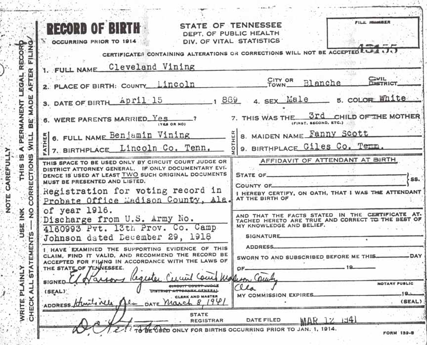
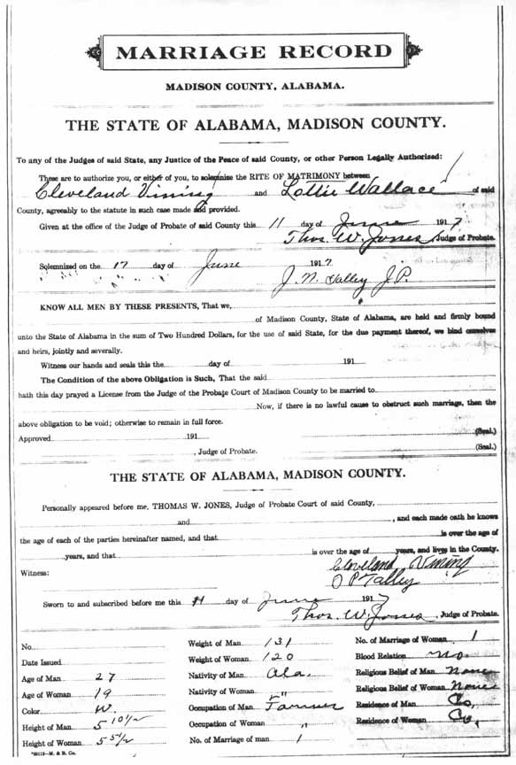
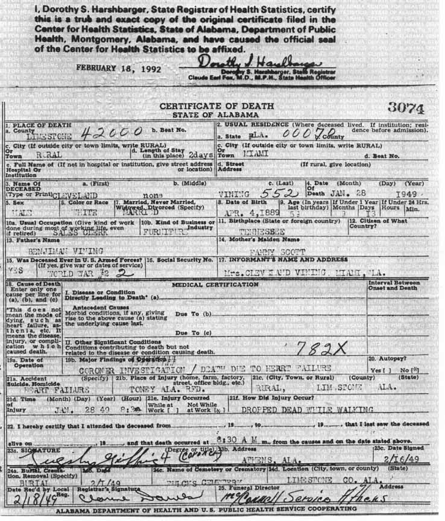
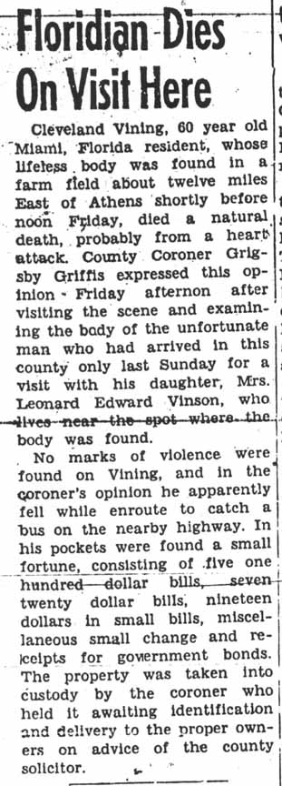
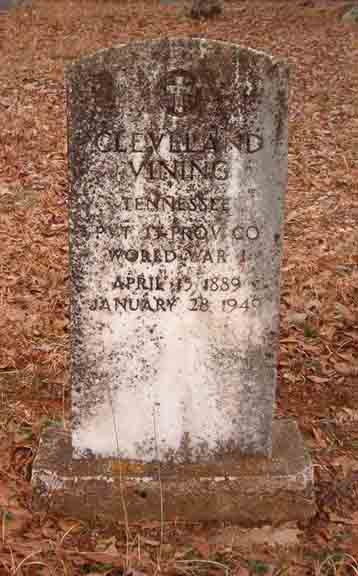
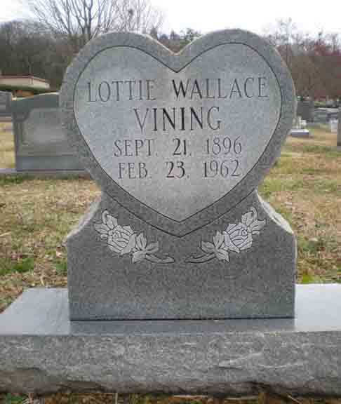
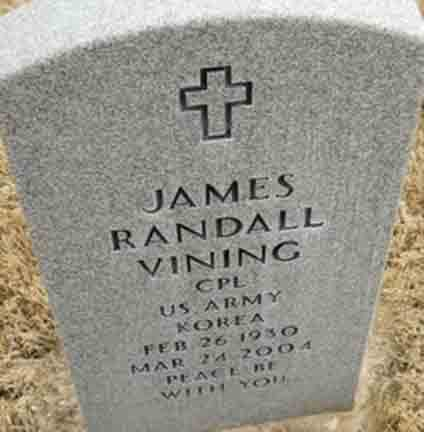

Documentation for Cleveland Vining - Lottie Wallace
Birth Data
Birth record for Cleveland Vining:

Marriage Data
Marriage record for Cleveland Vining and Lottie Wallace:

Census Data
| |
1920 |
1930 |
1940 |
| Cleveland Vining |
? |
40 |
? |
| Lottie (Wallace) Vining |
? |
33 |
? |
| Jennie S. Vining |
? |
11 |
? |
| Carty Cleveland Vining |
|
8 |
? |
| Nancy L. Vining |
|
5 |
? |
| Edward Thomas Vining |
|
| ? |
| James Randall Vining |
|
1 m. |
? |
| son Vining |
|
[dead?] |
|
1930 Madison Crossroads (precinct 10), Madison County, Alabama - dwelling 149, family 159:

Death Data
Death certificate for Cleveland Vining:

Obituary for Cleveland Vining, from Limestone Democrat, Athens, Alabama; Thursday, 3 February 1949:

Gravestone for Cleveland Vining, in Fowlkes Cemetery, Monrovia, Madison County, Alabama (from Find A Grave):

Gravestone for Lottie (Wallace) Vining, in Maple Hill Cemetery, Huntsville, Madison County, Alabama (from Find A Grave):

Gravestone for James Randall Vining, son of Cleveland Vining and Lottie (Wallace) Vining, in Houston National Cemetery, Houston, Harris County, Texas (from Find A Grave):
